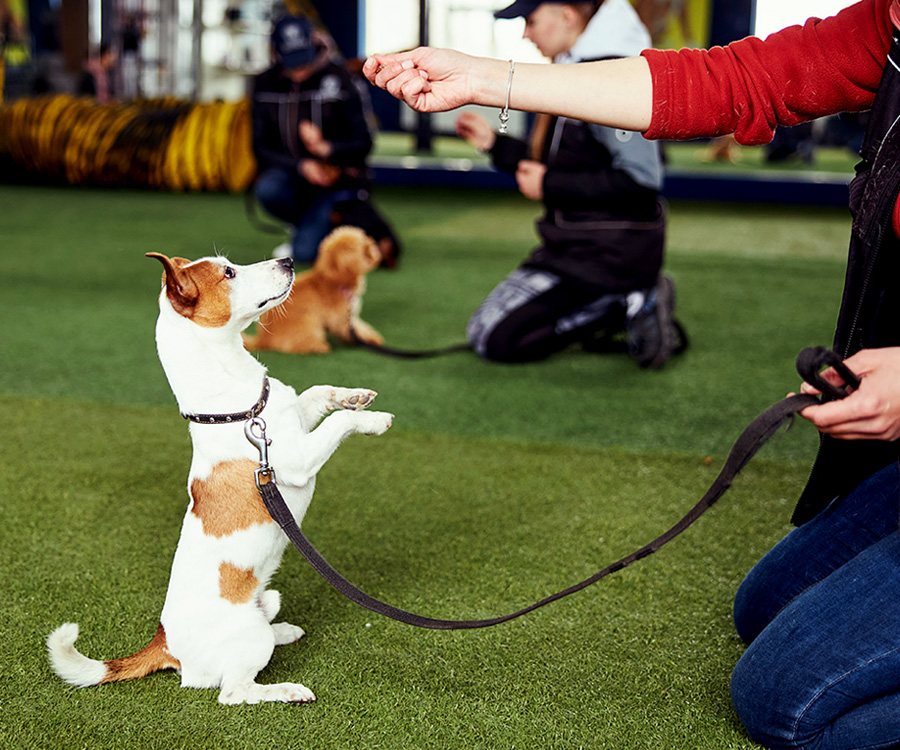

dogs are THE best

Loyal and Affectionist
Dogs have evolved to form close bonds with their human companions, and their loyalty and affection is a result of this evolution. They have a natural instinct to protect and care for their pack, which includes their human family. As dogs are social animals, they crave interaction and affection from their owners and will often form strong emotional bonds with them.
Social Animals
Dogs are social animals. They love to play and be around their owners Playing with their owners helps to strengthen the bond between the dog and the owner

Easy to train
Dogs can be trained to perform a variety of tasks and are intelligent creatures trained dogs can perform a wide range of functions, such as serving as service dogs for people with disabilities, assisting in search and rescue operations, or providing emotional support
Emotional Support
Dogs are good at providing emotional support because of their loyal and affectionate nature. They have the intrinsic capacity to recognise when their owner needs consolation, and they frequently shower them with love and affection to help them feel better.